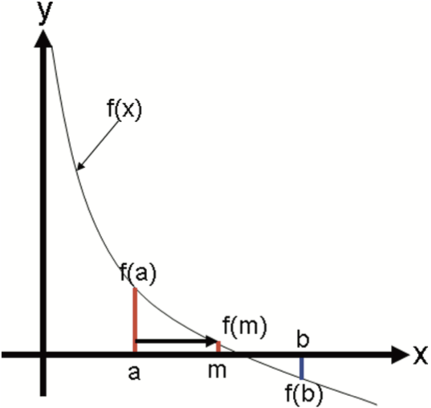

Bisection Method
Note
Semua codingan yang ada disini jika di copy paste sama persis akan dianggap sebagai kecurangan
Bisection method adalah sebuah teknik untuk menentukan root pada suatu persamaan yang memiliki interval.
setelah itu ketika kita sudah memiliki interval suatu persamaan matematika, kita dapat memilih 2 titik untuk menentukan
titik a dan titik b pada persamaan yang ada.
Pada pemilihan titik a dan b diahruskan data yang scalar dan memiliki suatu kondisi bahwa a < b.
Kemudian kita bisa menentukan titik gradien atau nilai tengah pada a dan b dengan menggunakan rumus m = a + b / 2
dari hasil kalkulasi nilai pada variable m kita akan menentukan apakah dia root tidak, nilai variable m akan root jika
nilai ``f(m) = 0 `` atau mendekati 0.
Jika nilai dari f(m) > 0 maka kita akan merubah interval yang sebelumnya dimulai dari a ke b,
maka interval akan berubah menjadi (m,b) atau dari nilai m ke nilai b.
Dan jika nilai dari f(m) < 0 maka kita akan merubah intervalnya menjadi (a,m).
berikut adalah contoh gambaran dari grafik yang menggambarkan proses bisection.
{kind=link}
Setelah itu kita akan masuk ke dalam code untuk menentukan suatu Bisection method pada persamaan yang diberikan.
Pertama-tama yang dapat kita lakukan adalah import library yang dibutuhkan.
import numpy as np
Kemudian kita akan menyiapkan suatu persamaan yaitu x^2 - 2 = 0 untuk mennentukan nilai root dari suatu persamaan.
def f(x):
return x**2 - 2
Pada code diatas didapatkan bahwa kita mempersiapkan suatu function yang berisikan persamaan yang sudah kita tentukan
yaitu x^2 - 2. Selanjutnya kita akan membuat suatu function bernama bisection untuk menentukan suatu
root dengan menggunakan Bisection Method.
def bisection(f, a,b, tol):
if np.sign(f(a)) == np.sign(f(b)):
return
m = (a+b)/2
if np.abs(f(m)) < tol:
return m
elif np.sign(f(a)) == np.sign(f(m)):
return bisection(f, a, m, tol)
elif np.sign(f(m)) == np.sign(f(b)):
return bisection(f, m, b, tol)
Pada kode diatas sebelum kita melakukan pencarian root dengan menggunakan bisection method,
kita harus menentukan apakah variable a dan variable b yang dimasukkan adalah memiliki nilai yang sama.
jika kedua variable memiliki nilai yang sama, maka kita tidak bisa melakukan pencarian root dengan menggunakn bisection.
Setelah kita bisa memastikan bahwa nilai a dan b tidak sama, maka kita akan melakukan mencari nilai tengah dari
variable a dan b untuk memastikan bahwa kita bisa mendapatkan nilai tengah dari kedua variable tersebut.
kemudian hasil dari kalkulasi nilai tengah antara a dan b yang ditampung pada variable m, kita masukkan nilai m
ke persamaan f. jika setelah kita absolute nilai dari f(m) lebih kecil dari nilai tolerance dan ternyata benar, maka kita return nilai m.
Dan jika tidak, maka kita validasi apakah nilai f(a) dan nilai f(m) memiliki nilai yang sama. Jika iya maka akan kita return function bisection
dengan range interval [a,m] begitupula sebaliknya.
r1 = bisection(f, 0, 2, 0.01)
print(r1)
Selanjutnya kita panggil function bisection yang kita tampung pada variable r1.
variable r1 merupakan nilai root dari persamaan f dengan pendekatan bisection.
Dibawah ini, merupakan full code implementasi dari bisection method.
# import library numpy
import numpy as np
# membuat function persaamaan
def f(x):
return x**2 - 2
# membuat function untuk solving persamaan dengan bisection
def bisection(f, a,b, tol):
if np.sign(f(a)) == np.sign(f(b)):
return
m = (a+b)/2
if np.abs(f(m)) < tol:
return m
elif np.sign(f(a)) == np.sign(f(m)):
return bisection(f, a, m, tol)
elif np.sign(f(m)) == np.sign(f(b)):
return bisection(f, m, b, tol)
# selanjutnya tinggal implementasi bisection
r1 = bisection(f, 0, 2, 0.01)
print(r1)
Berikut adalah penjelasan lengkap dari Bisection.